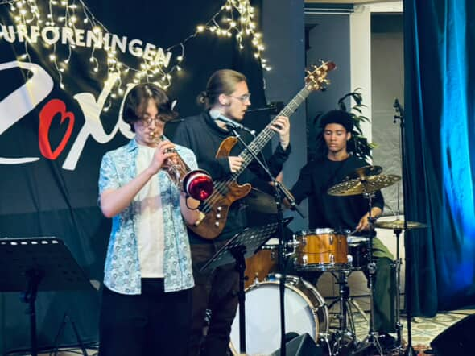

Forrest Aubrey
Trumpeter, Composer, Arranger
Trumpeter, Composer, Arranger
Forrest Aubrey is a young and growing artist from Seattle, Washington. He is currently attending the Berklee College of Music and is based in both Boston and Seattle. With his music, he seeks to blend musical tradition with experimentation, and investigate human emotion.
At 5, Aubrey started training in classical piano, and at 10 he picked up the trumpet. He furthered his development through high school, playing in his school concert and jazz bands, as well as playing gigs around his town.
Aubrey was exposed to a lot of music at a young age, ranging from jazz to rock, classical, and other genres. After having started the trumpet, he found he was deeply inspired by the sounds of Louis Armstrong and Roy Hargrove. Since then, he has expanded his knowledge of the trumpet and jazz as a genre, and has devoted himself to learning the tradition of the trumpet and jazz.

In May 2025, Aubrey got to play a tour in Sweden, with a group from Berklee led by bassist Albin Sundstrom. Playing jazz standards, originals of the bandleader Sundstrom's, and other tunes, the group electrified audiences in Stockholm and in Visby, on the island of Gotland. Many audience members expressed wishes for the band to return the next year.
In November 2025, Aubrey performed at the Berklee Performance Center onstage with Tia Fuller and featured guest artist Jaleel Shaw. He performed with the Gen Next All Stars Ensemble for the annual Christmas Jazz show at the BPC.